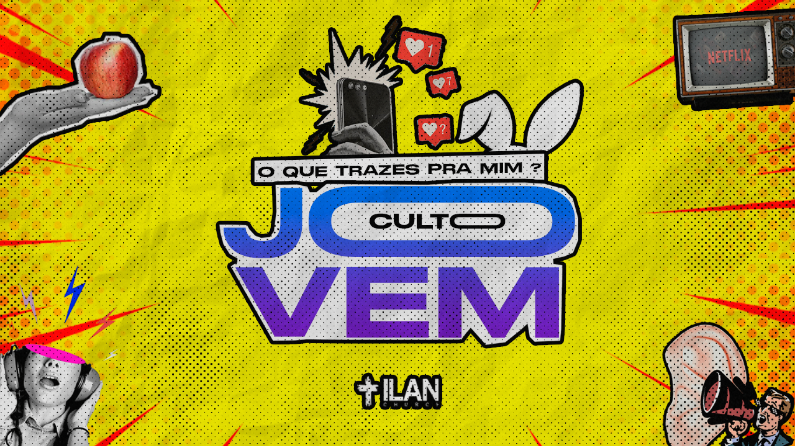

Ontem teve eclipse, e eu perdi :/ mas a NASA tirou foto pra nois!!
SO BEAUTIFUL!!
Agora veja como o pessoal da criativa da iLan manda bem

Imagem com o fundo amarelo e pontos pretos bem espalhados; nas bortas há detalhes semelhantes à estacas em vermelho e bolinhas alaranjadas. No centro está escrito o tema do culto 'O que trazes pra mim?' em preto e 'Culto Jovem' em degradê de azul em cima e roxo em baixo, juntamente com um par de orelhar de coelho e uma mão segurando um celular em preto e brando com emojis de likes das redes socias. Na parte superior esquerda há uma mão em preto e branco segurando uma maçã vermelha. Na parte superior direita há uma imagem de televisor antigo com o logo da Netflix em vermelho na tela. Na parte inferior direita há o desenho de um homem calcasiano gritando em um megafone ao lado de uma orelha gigante. E, na parte interior esquerda, há uma imagem em preto e branco de uma jovem com fones de ouvido, onde estaria o topo da cabeça tem um cículo pintado de rosa e saem raios cinza, azul e vermelho; ao centro da parte inferior, há o logo da ILAN Church branco com brodas grossas pretas
Uma parada séria agora
Já reparou que quando você toma leite sua via respiratória dá uma bugada, tipo como se tivesse afetado sua rinite/sinusite? Se você não tem rinite/sinusite agradeça a Deus. Deve ter alguma explicação científica, mas eu não lembro agora.
Uma lista de coisas aleatórias que eu gosto
Pão doce
Música
Botafogo
Distribuições Linux baseadas em RHEL e Arch
Meus 5 filmes favoritos da vida
A Bruxa
O Lado Bom da Vida
Babadook
Jason X
Sexta-Feira Muito Louca
Minha citação favorita de Chaves
A vingança nunca é plena, mata a alma e a envenena
Madruga, Seu
Você, velhaco que mexia no Orkut na lan house e passava raiva com os moleques jogando CS 1.6.... Você lembra desse vídeo?
Agora que você relembrou trauamas da infância, assita o meu vídeo favorito da internet
Falando em vídeo, estes são os meus canais favoritos do Youtube: